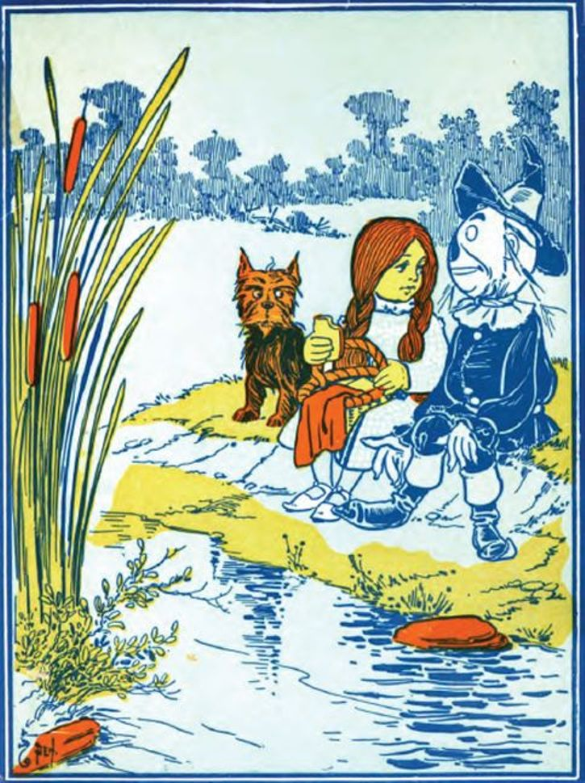
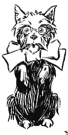

When Dorothy was left alone she began to feel hungry. So she went to the cupboard and cut herself some bread, which she spread with butter. She gave some to Toto, and taking a pail from the shelf she carried it down to the little brook and filled it with clear, sparkling water. Toto ran over to the trees and began to bark at the birds sitting there. Dorothy went to get him, and saw such delicious fruit hanging from the branches that she gathered some of it, finding it just what she wanted to help out her breakfast.
Then she went back to the house, and having helped herself and Toto to a good drink of the cool, clear water, she set about making ready for the journey to the City of Emeralds.